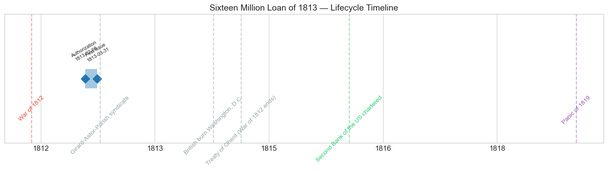
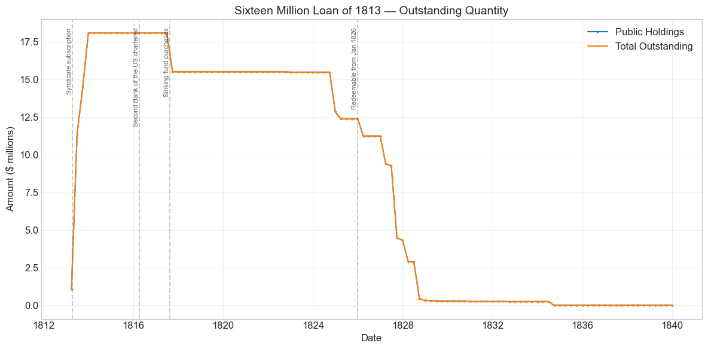
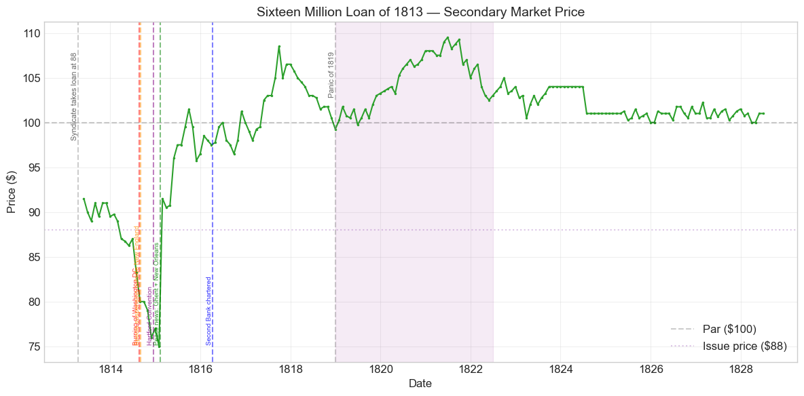
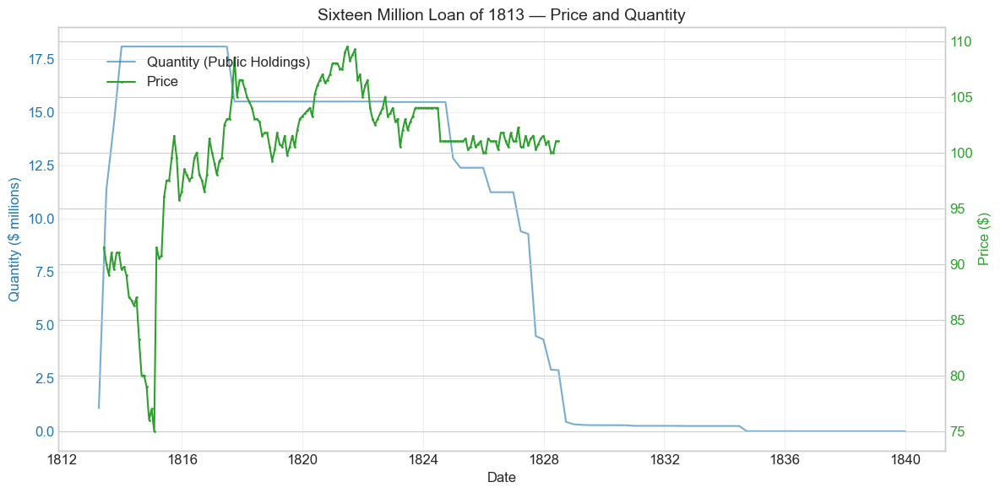
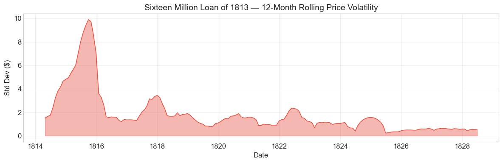

Bond Biography: Sixteen Million Loan of 1813#
The Loan That Saved the War — and Invented American Underwriting#
An enhanced chapter from the Hall-Payne-Sargent US Federal Bond Database (2,857 issues, 1776–1960)
Bond ID (L1): 20052 | Category: Interest Bearing > Marketable > Long Term Bond
Data note. The database records one price series for several war loans. This loan’s prices equal those of the Seven and One-Half Million Loan of 1813 (ID 20054) in all 182 months, and those of the Six Per Cent. Loan of 1812 (ID 20048) and the Exchanged Six Per Cent. Stock of 1812 (ID 20051) in 130 of 149 overlapping months (they differ only in May–September 1813 and July 1824–September 1825). Comparisons among these bonds carry no information. Prices from August 1814 to February 1817 are quoted in the paper of banks that had suspended specie payments.
import pandas as pd
import numpy as np
import matplotlib.pyplot as plt
import matplotlib.patches as mpatches
import datetime
import warnings
warnings.filterwarnings('ignore')
plt.style.use('seaborn-v0_8-whitegrid')
plt.rcParams.update({'figure.figsize': (12, 6), 'font.size': 12,
'axes.titlesize': 14, 'axes.labelsize': 12})
# Load the bond database
store = pd.HDFStore('../data/BondDF.h5', mode='r')
BondList = store['BondList']
BondQuant = store['BondQuant']
BondPrice = store['BondPrice']
store.close()
BondQuant_T = BondQuant.transpose()
BondPrice_T = BondPrice.transpose()
bond_id = 20052
print(f'Loaded data for: Sixteen Million Loan of 1813 (ID: 20052)')
/Users/thomassargent/anaconda3/lib/python3.9/site-packages/pandas/core/arrays/masked.py:60: UserWarning: Pandas requires version '1.3.6' or newer of 'bottleneck' (version '1.3.5' currently installed).
from pandas.core import (
Loaded data for: Sixteen Million Loan of 1813 (ID: 20052)
Overview#
The Sixteen Million Loan of 1813 was authorized under the Act of February 8, 1813. It was first issued on March 31, 1813 with a coupon rate of 6.0%. The bond was active during the War of 1812 and the Panic of 1819. During its lifetime on the secondary market, the bond’s average price was $100.19, ranging from $75.0 to $109.5 (based on 182 monthly observations from 1813-05-31 to 1828-06-30). Peak outstanding reached $18.11 million on 1813-12-31.
By the winter of 1812–13, the war that Congress had declared with such confidence was going badly, and so were the government’s finances. The invasion of Canada had failed, the Royal Navy’s blockade was strangling the customs revenues on which the Treasury depended, and the Six Per Cent. Loan of 1812 (Bond ID 20048, the subject of the preceding chapter) had fallen well short of its $11 million authorization even when sold at par. Treasury Secretary Albert Gallatin told Congress bluntly that the war could not be fought on customs duties alone; Congress, still ideologically averse to internal taxation, answered with more borrowing. The Act of February 8, 1813 authorized the largest loan the United States had ever attempted: $16 million — roughly equal to an entire year’s federal revenue — and, crucially, it dropped the requirement that the stock be sold at par.
What happened next made this the most famous single borrowing of the War of 1812. The public subscription opened in March 1813 and failed: the offers received covered only a fraction of the $16 million, with New England capital — hostile to “Mr. Madison’s War” — conspicuously absent. Federal credit stood at the edge of collapse. The loan was rescued not by the public but by a syndicate of three private financiers — Stephen Girard of Philadelphia, John Jacob Astor of New York, and David Parish, agent of European banking houses — who together took the great bulk of the issue at $88 per $100 of 6% stock. It was the first time the federal government relied on outside financiers to place a loan wholesale for resale to investors: the moment usually identified as the birth of investment-banking-style underwriting in America. The bond’s 182-month price history then traces the entire arc of the era — the grinding wartime discount, the trough of early 1815, the violent peace bounce after Ghent, the long climb above par in the Era of Good Feelings, and orderly redemption in the late 1820s.
Historical Context#
The following major events occurred during this bond’s lifetime:
Date |
Event |
Category |
|---|---|---|
1812-06-18 to 1815-02-18 |
War of 1812 |
War |
1814-08-24 |
British burn Washington, D.C. |
Other |
1814-12-24 |
Treaty of Ghent (War of 1812 ends) |
Other |
1816-04-10 |
Second Bank of the US chartered |
Legislation |
1819-01-01 to 1821-12-31 |
Panic of 1819 |
Crisis |
The bond’s lifetime overlapped with: War of 1812. Financial crises during this period included: Panic of 1819. Key legislation: Second Bank of the US chartered.
War Finance in 1813: Gallatin’s Predicament#
The fiscal position Gallatin faced in early 1813 was dire. War expenditures were running far ahead of revenue — by 1814 the gap between spending and receipts would approach $30 million a year — yet the Republican Congress had still not enacted the internal taxes Gallatin had requested at the war’s outset (a package of internal duties was finally passed only in the summer of 1813, and its proceeds arrived later still). The First Bank of the United States, which might have lent directly to the Treasury or organized a loan, had been allowed to expire in 1811. The country’s deepest pool of liquid capital sat in New England, whose merchants and banks largely refused to lend to a war they opposed. When the $16 million subscription books opened in March 1813, the results confirmed the worst: public offers covered well under half the amount sought. Gallatin later recalled the moment as one in which the government had scarcely enough money to meet its immediate engagements.
The Rescue#
Into this breach stepped three men with the wealth, the networks, and the nerve to act where the public would not. David Parish — a cosmopolitan financier connected to the great European houses, then living in Philadelphia — and Stephen Girard — the French-born merchant whose private bank occupied the old First Bank building — jointly subscribed for the largest share; John Jacob Astor of New York took a further large block. Together the syndicate absorbed the bulk of the loan (contemporary accounts put the combined syndicate share at roughly $9–10 million of the issue) at 88 per 100, with the standard provision that if the government later borrowed on better terms for subscribers, earlier subscribers would receive the benefit. At 88, a 6% coupon meant an effective yield well above 6% — nearer 7½ percent — a measure of how far federal credit had deteriorated since the 1812 loan sold at par. With the loan secured, Gallatin sailed for Europe in May 1813 to pursue the Russian mediation that would eventually lead to Ghent; the Sixteen Million Loan was the last great act of his Treasury tenure.
War, Peace, and the Panic in the Price Series#
The market never let holders forget the risk. The stock’s first recorded quotation, in May 1813, was $91.50 — already a comfortable paper gain for syndicate members who had paid 88, but well below par. From there the price ground downward as the war news worsened, reaching the $70s in the terrible autumn and winter of 1814–15 (the burning of Washington, the suspension of specie payments by banks outside New England, and the Hartford Convention). The trough of $75.00 came at the end of January 1815. Then, in a single month, peace: the price leapt to $91.50 in February 1815 — a +22% move — as news of the Treaty of Ghent and Jackson’s victory at New Orleans reached the markets. The stock crossed par in September 1815 and, like its 1812 sibling, climbed steadily through the Era of Good Feelings. During the Panic of 1819 the price rose rather than fell — the Second Bank’s contractionary policy produced deflation, which raised the real value of the bond’s fixed coin payments — carrying the stock to its all-time peak of $109.50 in June 1821.
# Bond Lifecycle Timeline
fig, ax = plt.subplots(figsize=(14, 4))
# Key dates
dates = [('Authorization', '1813-02-08'), ('First Issue', '1813-03-31')]
events = [('War of 1812', '1812-06-18', 'war'), ('Girard-Astor-Parish syndicate', '1813-04-15', 'other'), ('British burn Washington, D.C.', '1814-08-24', 'other'), ('Treaty of Ghent (War of 1812 ends)', '1814-12-24', 'other'), ('Second Bank of the US chartered', '1816-04-10', 'legislation'), ('Panic of 1819', '1819-01-01', 'crisis')]
import matplotlib.dates as mdates
from datetime import datetime
# Plot bond lifetime bar
d0 = datetime.strptime(dates[0][1], '%Y-%m-%d')
d1 = datetime.strptime(dates[-1][1], '%Y-%m-%d')
ax.barh(0, (d1 - d0).days, left=mdates.date2num(d0), height=0.3,
color='#1f77b4', alpha=0.4, label='Bond Lifetime')
# Mark key dates
for label, date_str in dates:
d = datetime.strptime(date_str, '%Y-%m-%d')
ax.plot(mdates.date2num(d), 0, 'D', color='#1f77b4', markersize=10)
ax.annotate(f'{label}\n{date_str}', (mdates.date2num(d), 0.25),
ha='center', va='bottom', fontsize=8, rotation=30)
# Mark historical events
colors = {'war': '#e74c3c', 'crisis': '#9b59b6', 'legislation': '#2ecc71', 'other': '#95a5a6', 'monetary': '#f39c12'}
for name, date_str, cat in events:
d = datetime.strptime(date_str, '%Y-%m-%d')
ax.axvline(mdates.date2num(d), color=colors.get(cat, 'gray'), alpha=0.5, linestyle='--')
ax.annotate(name, (mdates.date2num(d), -0.25), ha='center', va='top',
fontsize=10, rotation=45, color=colors.get(cat, 'gray'))
ax.set_yticks([])
ax.xaxis.set_major_formatter(mdates.DateFormatter('%Y'))
ax.set_title('Sixteen Million Loan of 1813 — Lifecycle Timeline')
ax.set_ylim(-1, 1)
plt.tight_layout()
plt.show()

Bond Features#
Feature |
Detail |
|---|---|
Name |
Sixteen Million Loan of 1813 |
Authorizing Act |
February 8, 1813 |
Authorization Date |
February 08, 1813 |
First Issue Date |
March 31, 1813 |
Term |
13 years |
First Redemption |
N/A |
Final Redemption |
N/A |
Coupon Rate |
6.0% |
Payment Frequency |
4.0 times/year |
Callable |
No |
Payable in Coin |
Yes |
Authorized Amount |
$16 million (borrowed) |
Price Sold |
0.88 (i.e., $88 per $100 of stock) |
The 13-year term made the stock redeemable at the government’s pleasure after January 1, 1826 — the same redemption date as the Seven and One-Half Million Loan of 1813; the database records one price series for the two issues. Note the Price Sold of 0.88: because subscribers received $100 of 6% stock for every $88 paid in, borrowing $16 million in cash required issuing roughly $18.1 million in face value — exactly the peak outstanding recorded in the database.
# Display full bond features from database
row = BondList.loc[20052]
display_cols = [
"Treasury's Name Of Issue", 'Authorizing Act', 'Term Of Loan',
'First Issue Date', 'First Redemption Date', 'Final Redemption Date',
'Coupon Rate', 'Coupons Per Year', 'Callable', 'Coin',
'Authorized Amount', 'Price Sold'
]
print('Bond Features from Database:')
print('=' * 55)
for col in display_cols:
if col in row.index:
print(f' {col:<30} {row[col]}')
Bond Features from Database:
=======================================================
Treasury's Name Of Issue Sixteen Million Loan of 1813
Authorizing Act February 8, 1813
Term Of Loan 13 years
First Issue Date 1813-03-31 00:00:00
First Redemption Date NaT
Final Redemption Date NaT
Coupon Rate 6.0
Coupons Per Year 4.0
Callable 0.0
Coin 1.0
Authorized Amount nan
Price Sold 0.88
Bond Quantity Over Time#
The bond’s outstanding quantity peaked at $18.11 million on 1813-12-31. Data spans from 1813-03-31 to 1839-12-31 (108 monthly observations).
# Bond quantity over time
fig, ax = plt.subplots(figsize=(12, 6))
for stype in ['Public Holdings', 'Total Outstanding']:
try:
s = BondQuant_T.loc[(20052, stype)]
s = s[s.notna()]
if len(s) > 0:
ax.plot(s.index, s.values / 1e6, marker='.', markersize=3, linewidth=1.5, label=stype)
except KeyError:
pass
ax.set_title('Sixteen Million Loan of 1813 — Outstanding Quantity')
ax.set_xlabel('Date')
ax.set_ylabel('Amount ($ millions)')
ax.legend()
ax.grid(True, alpha=0.3)
events = {'1813-04-15': 'Syndicate subscription', '1816-04-10': 'Second Bank of the US chartered', '1817-08-15': 'Sinking fund purchases', '1826-01-01': 'Redeemable from Jan 1826'}
for date_str, label in events.items():
d = pd.Timestamp(date_str)
ax.axvline(d, color='gray', alpha=0.4, linestyle='--')
ax.text(d, ax.get_ylim()[1]*0.97, label, rotation=90, va='top', ha='right', fontsize=8, alpha=0.7)
plt.tight_layout()
plt.show()

Quantity Analysis#
The issuance profile is a mirror of the loan’s rescue. Only about $1.09 million was on the books at the end of March 1813 — the meager harvest of the failed public subscription. Then, in the second quarter, the syndicate’s payments flowed in: outstanding stock jumped to $11.35 million by June 30, 1813 (the auto-detected +944.6% event), to $14.49 million by September, and to the peak of $18.11 million by December as installments were completed. The face amount exceeds the $16 million borrowed precisely because the stock was sold at 88: every $88 of cash purchased $100 of stock, so $16 million of money became roughly $18.1 million of debt.
The stock then sat essentially unchanged through the war and its aftermath until 1817, when the outstanding amount dropped from $18.10 million to $15.52 million between June and September. According to Bayley (1881), the commissioners of the sinking fund purchased $2,580,943.70 of this stock at par during these months — part of a coordinated postwar operation in which the commissioners simultaneously bought large blocks of the Six Per Cent. Loan of 1812 and the Seven and One-Half Million Loan of 1813. Buoyant postwar customs revenues had produced a large surplus, and the Treasury used it to begin retiring the war debt a decade ahead of schedule.
After a long plateau near $15.5 million, systematic retirement began once the stock became redeemable on January 1, 1826. The quantity series steps down through 1824–1828: partial redemptions and purchases in 1824–1827, then the large drops of September 1827 (−51.8%), March 1828 (−32.9%), and September 1828 (−84.5%) as the government called in the remaining stock under the sinking-fund program that, by the mid-1830s, extinguished the entire national debt. A small residual (a few hundred thousand dollars, finally just $5,546 from late 1834) lingers on the books into 1839 — unpresented certificates whose holders had not yet come forward for payment, a common feature of early federal redemptions rather than a market phenomenon.
Secondary Market Prices#
Overall Statistics (1813-05-31 to 1828-06-30): Mean $100.19, Range $75.0–$109.5, Std Dev $6.36, 182 observations.
By Period:
Period |
Mean |
Std |
Min |
Max |
Obs |
|---|---|---|---|---|---|
Issue to End (1813-03 to 1828-06) |
$100.19 |
$6.36 |
$75.0 |
$109.5 |
182 |
Two caveats are worth bearing in mind when reading the wartime portion of this series. First, quotations were thin and irregular: there was no organized national bond market, and monthly prices are drawn from regional quotations that could gap or go stale. Second, after banks outside New England suspended specie payments in August–September 1814, quotations were made in depreciated local bank paper. A nominal price of $78 in Philadelphia or Baltimore paper was worth less in specie than the same figure quoted a year earlier, so the recorded 1814–15 prices, grim as they are, if anything understate the collapse in the specie value of federal debt.
# Annotated price chart
fig, ax = plt.subplots(figsize=(12, 6))
s = BondPrice_T.loc[(20052, 'Average')]
s = pd.to_numeric(s, errors='coerce').dropna()
if len(s) > 0:
ax.plot(s.index, s.values, marker='.', markersize=3, linewidth=1.5, color='#2ca02c')
ax.axhline(100, color='black', alpha=0.2, linestyle='--', label='Par ($100)')
ax.axhline(88, color='#8e44ad', alpha=0.3, linestyle=':', label='Issue price ($88)')
ax.set_title('Sixteen Million Loan of 1813 — Secondary Market Price')
ax.set_xlabel('Date')
ax.set_ylabel('Price ($)')
ax.legend(loc='lower right')
ax.grid(True, alpha=0.3)
events = {'1813-04-15': 'Syndicate takes loan at 88', '1819-01-01': 'Panic of 1819'}
for date_str, label in events.items():
d = pd.Timestamp(date_str)
ax.axvline(d, color='gray', alpha=0.4, linestyle='--')
ax.text(d, ax.get_ylim()[1]*0.97, label, rotation=90, va='top', ha='right', fontsize=8, alpha=0.7)
# Military and financial events with specific annotations
military_events = {
'1814-08-24': ('Burning of Washington DC', 'red'),
'1814-09-01': ('Specie suspension outside New England', 'darkorange'),
'1814-12-15': ('Hartford Convention', 'purple'),
'1815-02-11': ('Peace news: Ghent + New Orleans', 'green'),
'1816-04-10': ('Second Bank chartered', 'blue'),
}
for date_str, (label, color) in military_events.items():
d = pd.Timestamp(date_str)
ax.axvline(d, color=color, alpha=0.5, linestyle='--')
ax.text(d, ax.get_ylim()[0] + (ax.get_ylim()[1]-ax.get_ylim()[0])*0.05, label,
rotation=90, va='bottom', ha='right', fontsize=7, color=color, alpha=0.8)
# Shade Panic of 1819 period
ax.axvspan(pd.Timestamp('1819-01-01'), pd.Timestamp('1822-06-30'), alpha=0.08, color='purple', label='Panic of 1819')
plt.tight_layout()
plt.show()

# Price and Quantity — dual-axis chart
fig, ax1 = plt.subplots(figsize=(12, 6))
# Quantity (left axis)
for stype in ['Public Holdings', 'Total Outstanding']:
try:
q = BondQuant_T.loc[(20052, stype)]
q = q[q.notna()]
if len(q) > 0:
ax1.plot(q.index, q.values / 1e6, color='#1f77b4', alpha=0.6, label=f'Quantity ({stype})')
break
except KeyError:
pass
ax1.set_xlabel('Date')
ax1.set_ylabel('Quantity ($ millions)', color='#1f77b4')
ax1.tick_params(axis='y', labelcolor='#1f77b4')
# Price (right axis)
ax2 = ax1.twinx()
p = BondPrice_T.loc[(20052, 'Average')]
p = pd.to_numeric(p, errors='coerce').dropna()
if len(p) > 0:
ax2.plot(p.index, p.values, color='#2ca02c', marker='.', markersize=2, label='Price')
ax2.set_ylabel('Price ($)', color='#2ca02c')
ax2.tick_params(axis='y', labelcolor='#2ca02c')
ax1.set_title('Sixteen Million Loan of 1813 — Price and Quantity')
ax1.grid(True, alpha=0.3)
fig.legend(loc='upper left', bbox_to_anchor=(0.1, 0.9))
plt.tight_layout()
plt.show()

Detected Price/Quantity Events#
The following significant movements were auto-detected:
Date |
Type |
Change |
Nearest Historical Event |
|---|---|---|---|
1813-06 |
quantity_increase |
+944.6% |
None identified |
1813-09 |
quantity_increase |
+27.6% |
None identified |
1813-12 |
quantity_increase |
+25.0% |
None identified |
1815-02 |
price_spike |
+22.0% |
War of 1812 |
1815-05 |
price_spike |
+5.8% |
War of 1812 |
1827-09 |
quantity_decrease |
-51.8% |
None identified |
1828-03 |
quantity_decrease |
-32.9% |
None identified |
1828-09 |
quantity_decrease |
-84.5% |
None identified |
1828-12 |
quantity_decrease |
-25.5% |
None identified |
1834-09 |
quantity_decrease |
-97.8% |
None identified |
Causal Explanations#
Quantity increases, June–December 1813 (+944.6%, +27.6%, +25.0%): These are the syndicate’s money arriving. The failed public subscription had placed only about $1.1 million by the end of March; the Girard–Astor–Parish subscription of April 1813 and its installment payments through the year drove the outstanding stock from $1.09 million to its $18.11 million peak by December. This was not a market event but the mechanical execution of the underwriting agreement.
Price spike, February 1815 (+22.0%): The peace bounce. News of the Treaty of Ghent (signed December 24, 1814) and of Jackson’s victory at New Orleans (January 8, 1815) reached the seaboard cities in early-to-mid February 1815. The price jumped from its all-time low of $75.00 (end of January) to $91.50 in a single month, as the twin threats of military defeat and Treasury default evaporated together. The identical +22% spike appears in the Six Per Cent. Loan of 1812 because the database carries one price series for both issues in this period.
Price spike, May 1815 (+5.8%): Continuation of the recovery as the blockade lifted, trade resumed, and a flood of postwar imports promised the customs revenue needed to service the debt. The stock crossed par by September 1815.
Quantity decreases, 1827–1828: Systematic redemption. The stock had become redeemable on January 1, 1826, and the sinking-fund commissioners retired it in large tranches — the September 1827 (−51.8%) and September 1828 (−84.5%) drops carried outstanding stock from over $9 million to under $0.5 million in little more than a year. Prices in this period sit quietly at 100–101, exactly what one expects of a 6% stock trading against an imminent par redemption.
Quantity decrease, September 1834 (−97.8%): A bookkeeping event, not a market one: the last few hundred thousand dollars of unpresented certificates were written down to a $5,546 residual as the national debt was extinguished in 1834–35. No price series exists this late — the bond had ceased to trade years earlier.
Price Volatility#
Maximum drawdown: -18.0% (from peak on 1813-05-31 to trough on 1815-01-31)
Average monthly return: 0.075%
The chart below shows the 12-month rolling standard deviation of prices, indicating periods of high and low price stability. The volatility peak comes in 1815, straddling the collapse into the January trough and the violent peace recovery; from 1816 onward the series settles into the placid, low-volatility regime of a seasoned government stock. Note that the -18.0% drawdown is measured from the first recorded quotation of $91.50 — an investor who subscribed at $88 in April 1813 saw a smaller maximum loss (about -14.8% to the $75 trough), one of several ways the 88 price cushioned the syndicate.
# Rolling volatility (12-month window)
p = BondPrice_T.loc[(20052, 'Average')]
p = pd.to_numeric(p, errors='coerce').dropna()
if len(p) >= 12:
rolling_std = p.rolling(window=12).std().dropna()
fig, ax = plt.subplots(figsize=(12, 4))
ax.fill_between(rolling_std.index, rolling_std.values, alpha=0.4, color='#e74c3c')
ax.plot(rolling_std.index, rolling_std.values, color='#e74c3c', linewidth=1)
ax.set_title('Sixteen Million Loan of 1813 — 12-Month Rolling Price Volatility')
ax.set_xlabel('Date')
ax.set_ylabel('Std Dev ($)')
ax.grid(True, alpha=0.3)
plt.tight_layout()
plt.show()
else:
print('Insufficient data for rolling volatility (need >= 12 observations)')

Issuance, Distribution, and Redemption#
The bond was originally sold at $88 per $100 of stock — the first federal loan ever sold below par under an explicit statutory authorization to do so, and a public admission of how far the government’s credit had fallen since the 1812 loan was constrained to sell at 100.
The Failed Public Subscription#
The Treasury first tried the traditional route: subscription books opened in the commercial cities in March 1813. The response was dismal. Offers covered only a fraction of the $16 million — most accounts put the public take at well under half — and much of what was offered demanded steep discounts. New England, home to the nation’s largest concentration of specie and banking capital, boycotted the loan almost entirely; lending to the government was widely denounced there as complicity in an unjust war. South of Baltimore, capital markets were too thin to absorb large blocks of stock.
The Syndicate#
Gallatin then negotiated directly with the three men who could move the sums required:
Stephen Girard — the French-born Philadelphia merchant, probably the richest man in America, whose private bank operated out of the former First Bank of the United States building. Girard’s willingness to stake a great part of his fortune on the government’s survival became legendary; it also made him indispensable, and his subscription is often credited with saving the Treasury from immediate embarrassment.
David Parish — a financier of European formation (his family firm was of Hamburg, and he had managed vast specie transfers for European houses in the Americas), then resident in Philadelphia. Parish and Girard subscribed jointly for the largest single share of the loan — commonly reported at about $7.06 million between them.
John Jacob Astor — the German-born New York fur and real-estate magnate, who took a further block commonly reported at about $2.06 million, partly for himself and partly for associates.
Together the syndicate took the great bulk of the issue — roughly $9–10 million by most accounts — at 88, with a “most favored lender” clause entitling them to any better terms offered on later subscriptions. They did not intend to hold it all: like Baring & Hope with the Louisiana stock a decade earlier (see the Louisiana Six Per Cent. chapter), they bought wholesale to distribute at retail, reselling stock to banks, merchants, and investors as opportunity offered. This is why the episode is conventionally dated as the beginning of securities underwriting in the United States: private capitalists interposed their own credit and balance sheets between the Treasury and the investing public, for a profit built into the purchase price.
Redemption#
Interest was payable quarterly in coin, and the stock was redeemable at the government’s pleasure after January 1, 1826. In the event, retirement came in stages: the sinking fund’s par purchases of $2.58 million in 1817, partial redemptions in 1824–1826, and the large calls of 1827–1828 that reduced the issue to a few hundred thousand dollars of unpresented certificates. Congress’s attempts in 1822–1825 to exchange maturing war sixes into new 4½ and 5 percent stocks met limited success for this family of bonds — most holders preferred cash — and the Sixteen Million Loan was overwhelmingly redeemed rather than converted, its last traces written off as the national debt itself was extinguished in the mid-1830s.
Implications and Legacy#
The Birth of American Underwriting#
The Sixteen Million Loan’s chief legacy is institutional. Before 1813, the Treasury sold debt the way Hamilton had: announce a loan, open subscription books, and wait. The failure of that method in wartime forced the government into the arms of private financiers who would buy an issue wholesale, below par, and take the distribution risk themselves. Girard, Astor, and Parish were not philanthropists — at 88 they bought a 6% claim on a government they judged more likely to survive than the market feared, an effective yield around 7½ percent, and the peace of 1815 vindicated the wager handsomely. But in interposing themselves they created the template — negotiated price, syndicate purchase, resale to the public — that Jay Cooke would industrialize in the Civil War and that remains the architecture of securities underwriting today. It is fitting that the same database contains both this loan and the Louisiana Six Per Cent. Stock: the one shows European houses underwriting American debt in 1803, the other shows Americans learning to do it for themselves ten years later, under duress.
The Price of Fiscal Unpreparedness#
The loan is also the sharpest single measure of what Jeffersonian fiscal orthodoxy cost in wartime. A government that had let its national bank die in 1811 and would not tax until 1813 found that it could borrow only at a widening discount: par in 1812, 88 in early and mid-1813, 88 again for the May 1814 loan, and 80 for the separate August 1814 offering (Bayley 1881). Each step down the price ladder transferred wealth from taxpayers to lenders as the price of delay. The lesson was absorbed: internal taxes were finally enacted in 1813–1815, and in 1816 even many old Republicans voted to charter the Second Bank of the United States — whose $35 million capital was, by design, subscribable largely in government war stock and Treasury notes rather than specie, a provision that both supported the market for issues like this one and re-tethered the banking system to federal finance.
Redemption and the Extinction of the Debt#
The bond’s long, quiet second act is as instructive as its dramatic first. From 1815 onward every quarterly coin payment was made in full; the sinking fund supported the market at par in 1817; the Panic of 1819 left holders not poorer but richer, as deflation lifted the stock to $109.50; and redemption after 1826 proceeded exactly on the statutory terms. A security born of near-default in 1813 ended its life two decades later as a routine, par-priced instrument retired by a government running surpluses — the entire arc of the early republic’s credit rehabilitation compressed into one price series. When the United States extinguished its national debt in 1834–35, the last certificates of the Sixteen Million Loan were among the obligations swept away.
An Anecdote in Place of a Moral#
Contemporaries did not miss the irony that the war for “free trade and sailors’ rights” was financed largely by three immigrants — a Frenchman, a German, and a financier of the Hamburg Parish house — while much native New England capital sat out the conflict altogether. Nor did the principals miss its opportunities: the syndicate negotiated hard, and Girard’s role in the loan cemented his bank’s place at the center of Philadelphia — and federal — finance for the rest of his life. Patriotism and profit ran together at 88 cents on the dollar — which is, perhaps, exactly what a well-functioning market for sovereign debt looks like when a republic’s survival is genuinely in doubt.
References#
Primary and Archival Sources#
Bayley, R. A. (1881). The National Loans of the United States, From July 4, 1776 to June 30, 1880. Washington: Government Printing Office.
Elliott, J. (1845). The Funding System of the United States and of Great Britain. Washington: Blair and Rives.
Act of February 8, 1813 (authorizing a loan of $16,000,000).
Act of August 2, 1813 (authorizing the $7.5 million loan); Act of March 24, 1814 (authorizing the $25 million loan); Act of April 10, 1816 (chartering the Second Bank of the United States).
Secondary Sources#
Payne, J., Szoke, A., Hall, G. & Sargent, T. (2025). Quarterly Journal of Economics.
Adams, H. (1889–1891). History of the United States of America during the Administrations of James Madison (war finance chapters). New York: Charles Scribner’s Sons.
Dewey, D. R. (1918). Financial History of the United States. New York: Longmans, Green and Co.
Studenski, P. & Krooss, H. E. (1952). Financial History of the United States. New York: McGraw-Hill.
Perkins, E. J. (1994). American Public Finance and Financial Services, 1700-1815. Columbus: Ohio State University Press.
Hickey, D. R. (1989). The War of 1812: A Forgotten Conflict. Urbana: University of Illinois Press.
Kagin, D. H. (1984). “Monetary Aspects of the Treasury Notes of the War of 1812.” The Journal of Economic History, 44(1).
Hensen, M. T. “Girard to the Rescue: Stephen Girard and the War Loan of February 8, 1813.”
Hall, G. J. & Sargent, T. J. (2014). “Fiscal Discriminations in Three Wars.” Journal of Monetary Economics, 61, 148-166.
Enhanced Bond Biography generated from the Hall-Payne-Sargent Bond Database. Narrative enrichment draws on Bayley (1881), Adams (1889-1891), Dewey (1918), Studenski & Krooss (1952), Perkins (1994), and Hickey (1989). Companion chapters: the Six Per Cent. Loan of 1812 (ID 20048) and the Louisiana Six Per Cent. Stock (ID 20044).